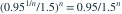

样本来自  ，以
，以  拒绝
拒绝  。要求在
。要求在  时第二类错误概率不超过 0.1，最小 n 是？
时第二类错误概率不超过 0.1，最小 n 是？
，以 拒绝 。要求在 时第二类错误概率不超过 0.1，最小 n 是？- A6
- B5
- C7
- D8
我已思考，展开答案与解析
正确答案：A
- 备择下不拒绝概率为

。 - 要求 。 不足， 满足。
易错提醒临界值也随 n 变化，计算功效时需要一并代入。
JYSG · 432精选 · 册内复旦大学432·2022年·十一(2)；PDF第38页（印刷页36）
原大题拆解
，以 拒绝 。要求在 时第二类错误概率不超过 0.1，最小 n 是？
。JYSG · 432精选 · 册内复旦大学432·2022年·十一(2)；PDF第38页（印刷页36）
原大题拆解